Preferences Dialog¶
Use options on the Preferences dialog to customize the behavior of the client. To open the Preferences dialog, select Preferences from the File menu. The left pane of the Preferences dialog displays a tree control; each node of the tree control provides access to options that are related to the node under which they are displayed.
Use the plus sign (+) to the left of a node name to expand a segment of the tree control.
Use the minus sign (-) to the left of a node name to close that node.
The Browser Node¶
Use preferences found in the Browser node of the tree control to personalize your workspace.
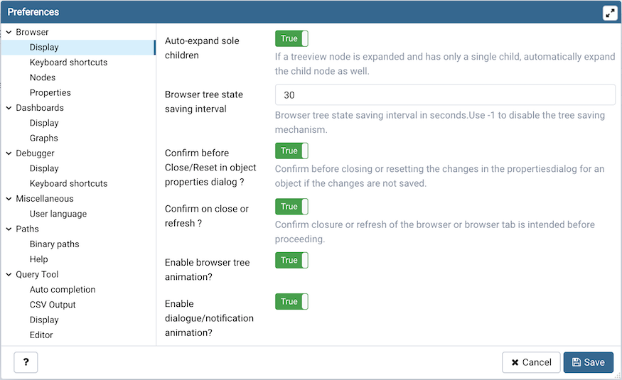Use the fields on the Display panel to specify general display preferences:
When the Auto-expand sole children switch is set to True, child nodes will be automatically expanded if a treeview node is expanded and has only a single child.
Use the Browser tree state saving interval field to set the treeview state saving interval. A value of -1 will disable the treeview state saving functionality.
When the Confirm before closing properties with unsaved changes switch is set to True, pgAdmin will warn you before closing the properties dialog of an object if there are any unsaved changes. On user confirmation, the properties dialog will close.
When the Confirm on close or refresh switch is set to True, pgAdmin will attempt to catch browser close or refresh events and prompt before allowing them to continue.
When the Enable browser tree animation? switch is set to True, the client will display the animated tree control otherwise it will be unanimated.
When the Enable dialogue/notification animation? switch is set to True, the client will display the animated dialogues/notifications otherwise it will be unanimated.
Use the Lock layout field to lock the UI layout at different levels. This can also be changed from File menu on the menu bar
Option |
Action |
|---|---|
None |
No locking. Every panel is resizable and dockable. |
Prevent docking |
This will disable the docking/undocking of the panels |
Full |
This will disable resizing, docking/undocking of the panels |
When the Show system objects? switch is set to True, the client will display system objects such as system schemas (for example, pg_temp) or system columns (for example, xmin or ctid) in the tree control.
Use the fields on the Keyboard shortcuts panel to configure shortcuts for the main window navigation:
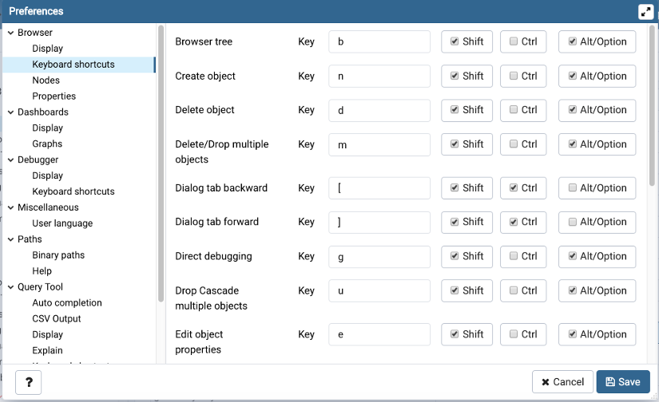The panel displays a list of keyboard shortcuts available for the main window; select the combination of the modifier keys along with the key to configure each shortcut.
Use the fields on the Nodes panel to select the object types that will be displayed in the Browser tree control:
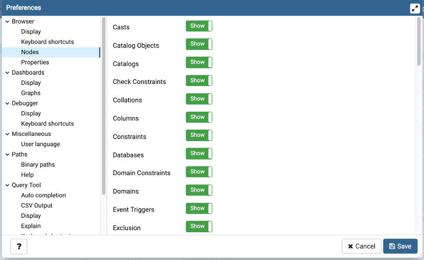The panel displays a list of database objects; slide the switch located next to each object to Show or Hide the database object. When querying system catalogs, you can reduce the number of object types displayed to increase speed.
Use fields on the Properties panel to specify browser properties:
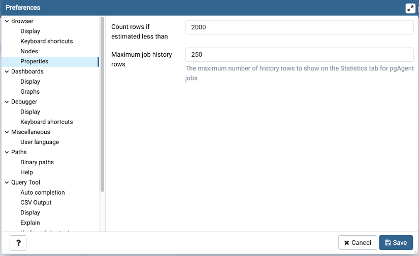Include a value in the Count rows if estimated less than field to perform a SELECT count(*) if the estimated number of rows in a table (as read from the table statistics) is below the specified limit. After performing the SELECT count(*), pgAdmin will display the row count. The default is 2000.
Provide a value in the Maximum job history rows field to limit the number of rows to show on the statistics tab for pgAgent jobs. The default is 250.
The Dashboards Node¶
Expand the Dashboards node to specify your dashboard display preferences.
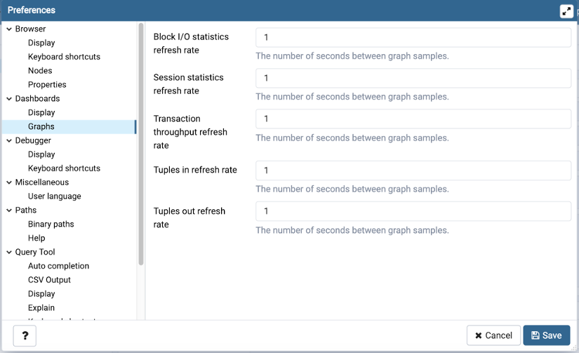Use the fields on the Graphs panel to specify your display preferences for the graphs on the Dashboard tab:
Use the Block I/O statistics refresh rate field to specify the number of seconds between block I/O statistic samples displayed in graphs.
Use the Session statistics refresh rate field to specify the number of seconds between session statistic samples displayed in graphs.
Use the Transaction throughput refresh rate field to specify the number of seconds between transaction throughput samples displayed in graphs.
Use the Tuples in refresh rate field to specify the number of seconds between tuples-in samples displayed in graphs.
Use the Tuples out refresh rate field to specify the number of seconds between tuples-out samples displayed in graphs.
When the Show activity? switch is set to True, activity tables will be displayed on dashboards.
When the Show graph data points? switch is set to True, data points will be visible on graph lines.
When the Show graphs? switch is set to True, graphs will be displayed on dashboards.
When the Show mouse hover tooltip? switch is set to True, a tooltip will appear on mouse hover on the graph lines giving the data point details.
The Debugger Node¶
Expand the Debugger node to specify your debugger display preferences.
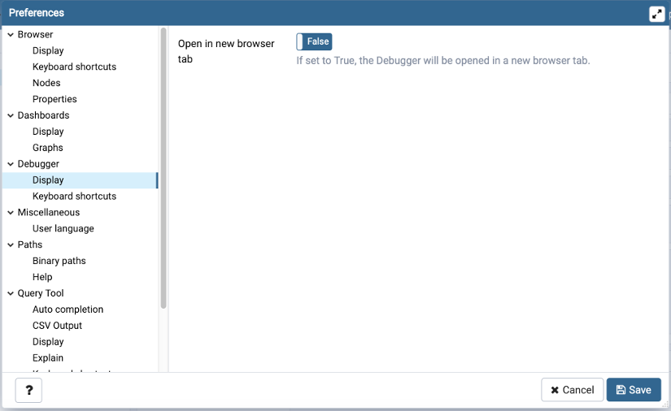When the Open in new browser tab switch is set to True, the Debugger will open in a new browser tab when invoked.
Use the fields on the Keyboard shortcuts panel to configure shortcuts for the debugger window navigation:
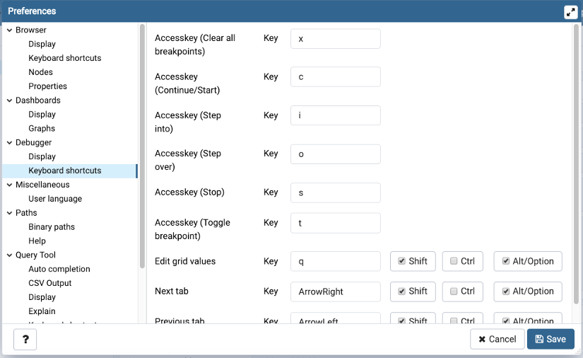The Miscellaneous Node¶
Expand the Miscellaneous node to specify miscellaneous display preferences.
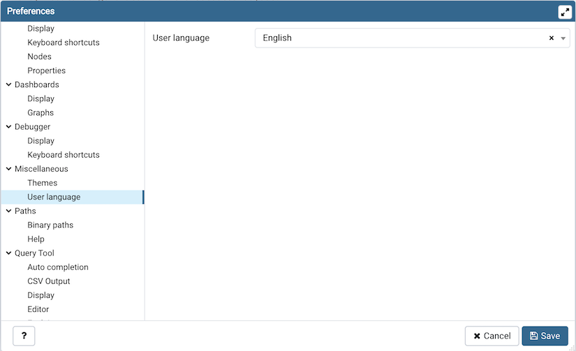Use the User language drop-down listbox to select the display language for the client.
Use the Themes drop-down listbox to select the theme for pgAdmin. You’ll also get a preview just below the drop down. Note that, to apply the theme you need to refresh the pgAdmin page. You can also submit your own themes, check here how.
The Paths Node¶
Expand the Paths node to specify the locations of supporting utility and help files.
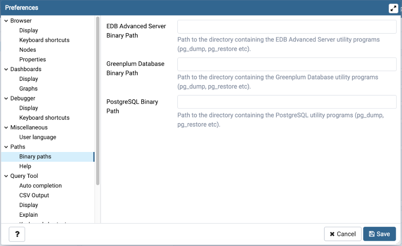Use the fields on the Binary paths panel to specify the path to the directory that contains the utility programs (pg_dump, pg_restore, and pg_dumpall) for monitored databases:
Use the EDB Advanced Server Binary Path field to specify the location of the EDB Postgres Advanced Server utility programs. If this path is not set, pgAdmin will attempt to find the utilities in standard locations used by EnterpriseDB.
Use the Greenplum Database Binary Path field to specify the location of the Greenplum database utility programs. If this path is not set, pgAdmin will attempt to find the utilities in standard locations used by Greenplum.
- Use the PostgreSQL Binary Path field to specify the location of the
PostgreSQL utility programs. If this path is not set, pgAdmin will attempt to find the utilities in standard locations used by PostgreSQL.
Use the fields on the Help panel to specify the location of help files.
Use the EDB Advanced Server Help Path to specify the path to EDB Postgres Advanced Server documentation.
Use the PostgreSQL Help Path to specify the path to PostgreSQL documentation.
Please note: the default help paths include the VERSION placeholder; the $VERSION$ placeholder will be replaced by the current database version.
The Query Tool Node¶
Expand the Query Tool node to access panels that allow you to specify your preferences for the Query Editor tool.
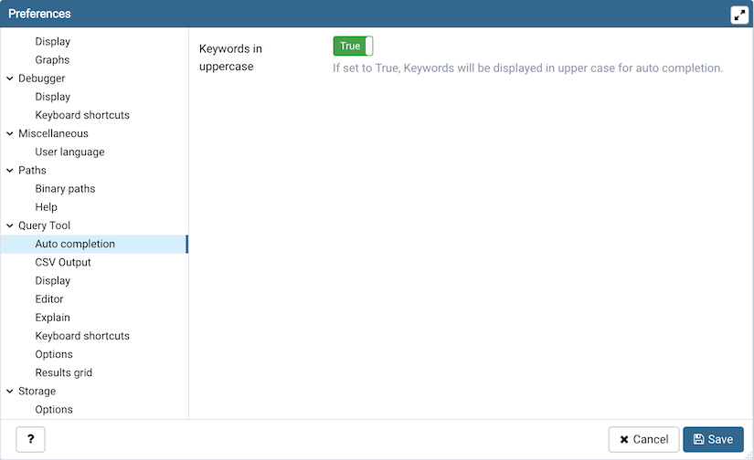Use the fields on the Auto Completion panel to set the auto completion options.
When the Keywords in uppercase switch is set to True then keywords are shown in upper case.
Use the fields on the CSV Output panel to control the CSV output.
Use the CSV field separator drop-down listbox to specify the separator character that will be used in CSV output.
Use the CSV quote character drop-down listbox to specify the quote character that will be used in CSV output.
Use the CSV quoting drop-down listbox to select the fields that will be quoted in the CSV output; select Strings, All, or None.
Use the Replace null values with option to replace null values with specified string in the output file. Default is set to ‘NULL’.
Use the fields on the Display panel to specify your preferences for the Query Tool display.
When the Connection status switch is set to True, each new instance of the Query Tool will display connection and transaction status.
Use the Connection status refresh rate field to specify the number of seconds between connection/transaction status updates.
When the Open in new browser tab switch is set to True, each new instance of the Query Tool will open in a new browser tab.
Use the Query info notifier timeout field to control the behaviour of the notifier that is displayed when query execution completes. A value of -1 will disable the notifier, and a value of 0 will display it until clicked. If a positive value above zero is specified, the notifier will be displayed for the specified number of seconds. The default is 5.
Use the fields on the Editor panel to change settings of the query editor.
When the Brace matching? switch is set to True, the editor will highlight pairs of matched braces.
When the Code folding? switch is set to False, the editor will disable code folding. Disabling will improve editor performance with large files.
Use the Font size field to specify the font size that will be used in text boxes and editors.
When the Insert bracket pairs? switch is set to True, the editor will automatically insert paired brackets.
When the Line wrapping switch is set to True, the editor will implement line-wrapping behavior.
When the Plain text mode? switch is set to True, the editor mode will be changed to text/plain. Keyword highlighting and code folding will be disabled. This will improve editor performance with large files.
Use the Tab size field to specify the number of spaces per tab character in the editor.
When the Use spaces switch is set to True, the editor will insert spaces (instead of tab characters) when the tab key or auto-indent are used.
Use the fields on the Explain panel to specify the level of detail included in a graphical EXPLAIN.
When the Show Buffers? switch is set to True, graphical explain details will include information about buffer usage.
When the Show Costs? switch is set to True, graphical explain details will include information about the estimated startup and total cost of each plan, as well as the estimated number of rows and the estimated width of each row.
When the Show Timing? switch is set to True, graphical explain details will include the startup time and time spent in each node in the output.
When the Verbose output? switch is set to True, graphical explain details will include extended information about the query execution plan.
Use the fields on the Options panel to manage editor preferences.
When the Auto-Commit? switch is set to True, each successful query is committed after execution.
When the Auto-Rollback? switch is set to True, failed queries are rolled back.
When the Prompt to save unsaved data changes? switch is set to True, the editor will prompt the user to saved unsaved data when exiting the data editor.
When the Prompt to save unsaved query changes? switch is set to True, the editor will prompt the user to saved unsaved query modifications when exiting the Query Tool.
When the Prompt to commit/rollback active transactions? switch is set to True, the editor will prompt the user to commit or rollback changes when exiting the Query Tool while the current transaction is not committed.
Use the fields on the Results grid panel to specify your formatting preferences for copied data.
Use the Result copy field separator drop-down listbox to select the field separator for copied data.
Use the Result copy quote character drop-down listbox to select the quote character for copied data.
Use the Result copy quoting drop-down listbox to select which type of fields require quoting; select All, None, or Strings.
Use the fields on the Keyboard shortcuts panel to configure shortcuts for the Query Tool window navigation:
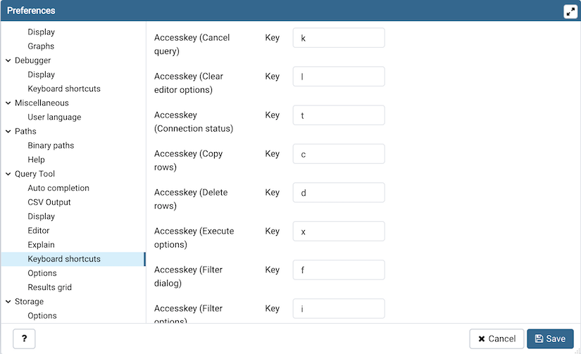The Schema Diff Node¶
Expand the Schema Diff node to specify your display preferences.
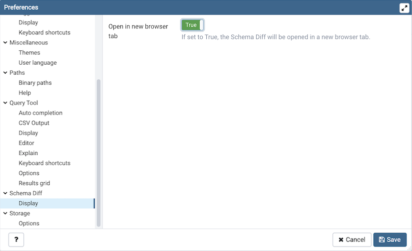Use the Open in new browser tab switch to indicate if you would like Schema Diff to open in a new tab.
The Storage Node¶
Expand the Storage node to specify your storage preferences.
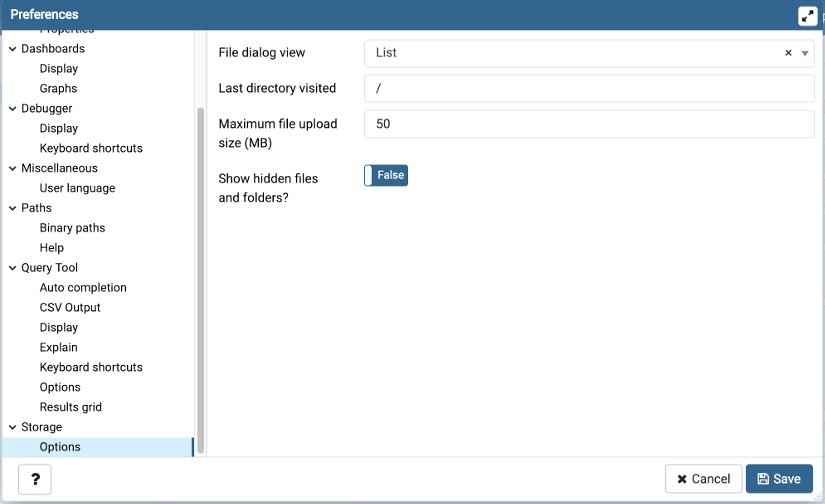Use the fields on the Options panel to specify storage preferences.
Use the File dialog view drop-down listbox to select the style of icons and display format that will be displayed when you open the file manager; select List to display a list view, or Grid to display folder icons.
Use the Last directory visited field to specify the name of the folder in which the file manager will open.
Use the Maximum file upload size(MB) field on the Options panel of the Storage node to specify the maximum file size for an upload.
When the Show hidden files and folders? switch is set to True, the file manager will display hidden files and folders.